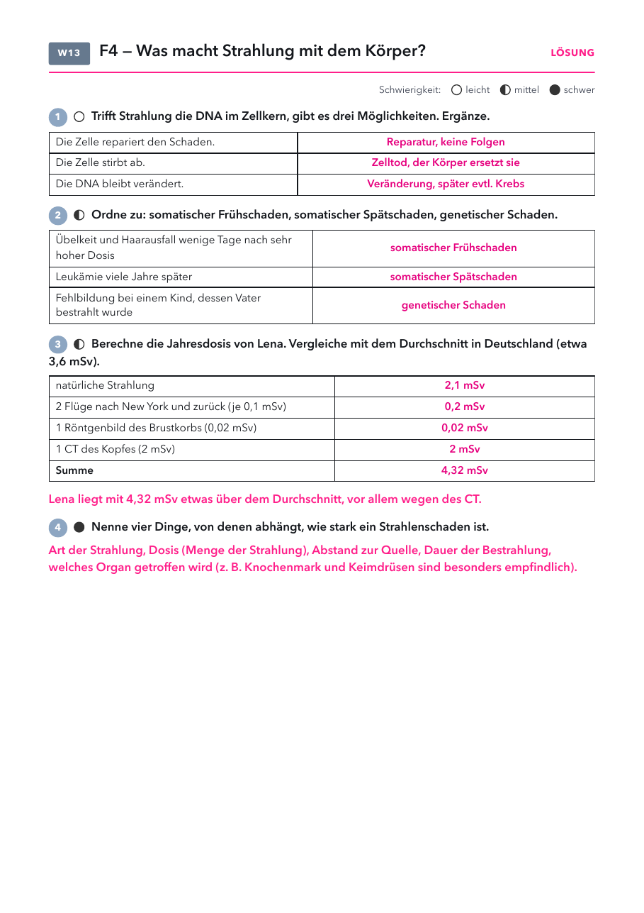

Klasse 10 · Physik · W13 (Woche ab 14.12.2026) · Leitfrage 4
| Material | Anzahl | Hinweis |
|---|---|---|
| nicht nötig | ||
| Material | Anzahl | Hinweis |
|---|---|---|
| nicht nötig | ||

| Anlass | Dosis | zum Vergleich |
|---|---|---|
| Röntgenbild des Brustkorbs | 0,01 bis 0,03 mSv | wie einige Tage natürliche Strahlung |
| Flug nach New York und zurück | etwa 0,1 mSv | mehr Höhenstrahlung in 10 km Höhe |
| CT des Kopfes | etwa 2 mSv | etwa so viel wie ein Jahr natürliche Strahlung |
| Beruflicher Grenzwert | 20 mSv pro Jahr | für Menschen, die mit Strahlung arbeiten |
Treffer in der Zelle mit drei Folgen, persönliche Jahresdosis mit Flügen, Röntgen, CT und Radon.
Lösung: Reparatur, Zelltod, Veränderung. Frühschaden, Spätschaden, genetischer Schaden. Jahresdosis 4,32 mSv, etwas über dem Durchschnitt. Faktoren: Art, Dosis, Abstand, Dauer, Organ.